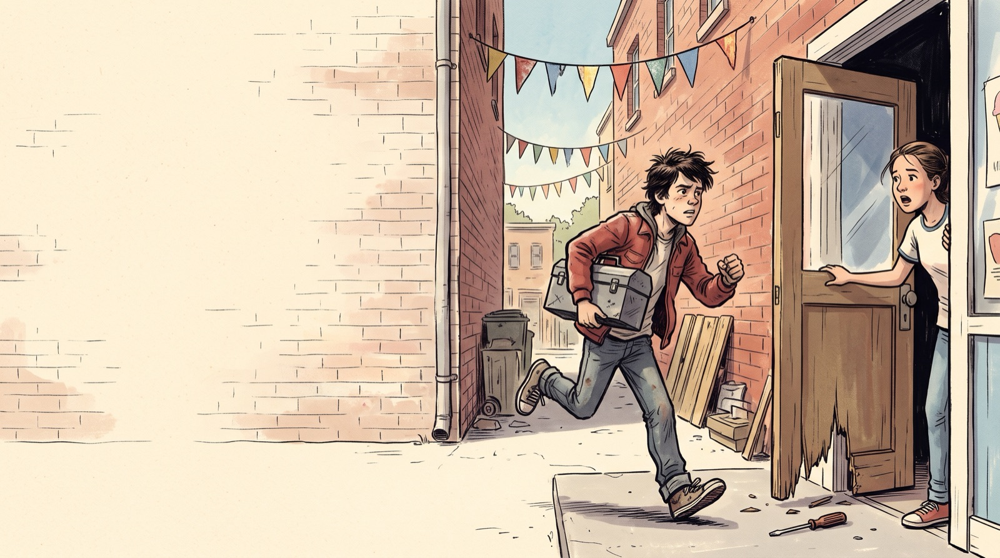

Rodney Rathbone for the Defense
Everybody Saw Rodney
The question before the court: What did everybody actually see, and what did they assume because it was Rodney?
Your case file is right where you left it.

The case file
Tip: the ← and → arrow keys move between scenes.
Read the Script
“Everybody Saw Rodney,” an original audio drama in seven short scenes. Contains spoilers, so open the case first.